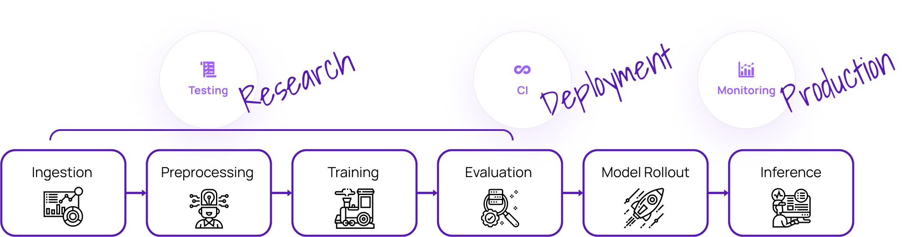

{kind=link}
Welcome to Deepchecks!#
Deepchecks is a holistic open-source solution for all of your AI & ML validation needs, enabling you to thoroughly test your data and models from research to production.
We invite you to:
See the following Deepchecks Components section for more info about the Testing, CI, & Monitoring components and for links to their corresponding documentation.
Go to the Get Started with Deepchecks Monitoring section to have it up and running quickly and see it in action.

Deepchecks’ Components for Continuous Validation#
Deepchecks provides comprehensive support for your testing requirements, from examining data integrity and assessing distributions, to validating data splits, comparing models and evaluating their performance across the model’s entire development process.
Deechecks’ continuous validation approach is based on testing the ML models and data throughout their lifecycle using the exact same checks, enabling a simple, elaborate and seamless experience for configuring and consuming the results. Each phase has its relevant interfaces (e.g. visual outputs, python/json output results, alert configuration, push notifications, RCA, etc.) for interacting with the test results.
Get Started with Deepchecks Testing#
Links for how to interact with us via our Slack Community or by opening an issue on Github.
🏃♀️ Testing Quickstarts 🏃♀️#
Get Help & Give Us Feedback#
Join Our Community 👋
In addition to perusing the documentation, feel free to:
Ask questions on the Slack Community.
Post an issue or start a discussion on Github Issues.
To contribute to the package, check out the Contribution Guidelines and join the contributors-q-&-a channel on Slack, or communicate with us via github issues.
To support us, please give us a star on ⭐️ Github ⭐️, it really means a lot for open source projects!